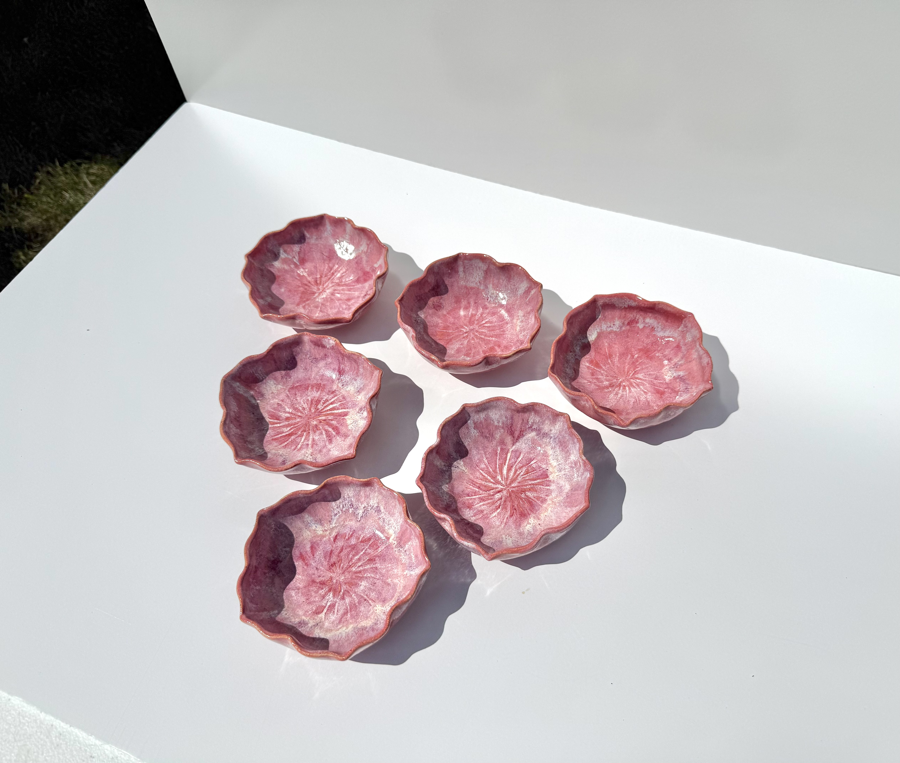
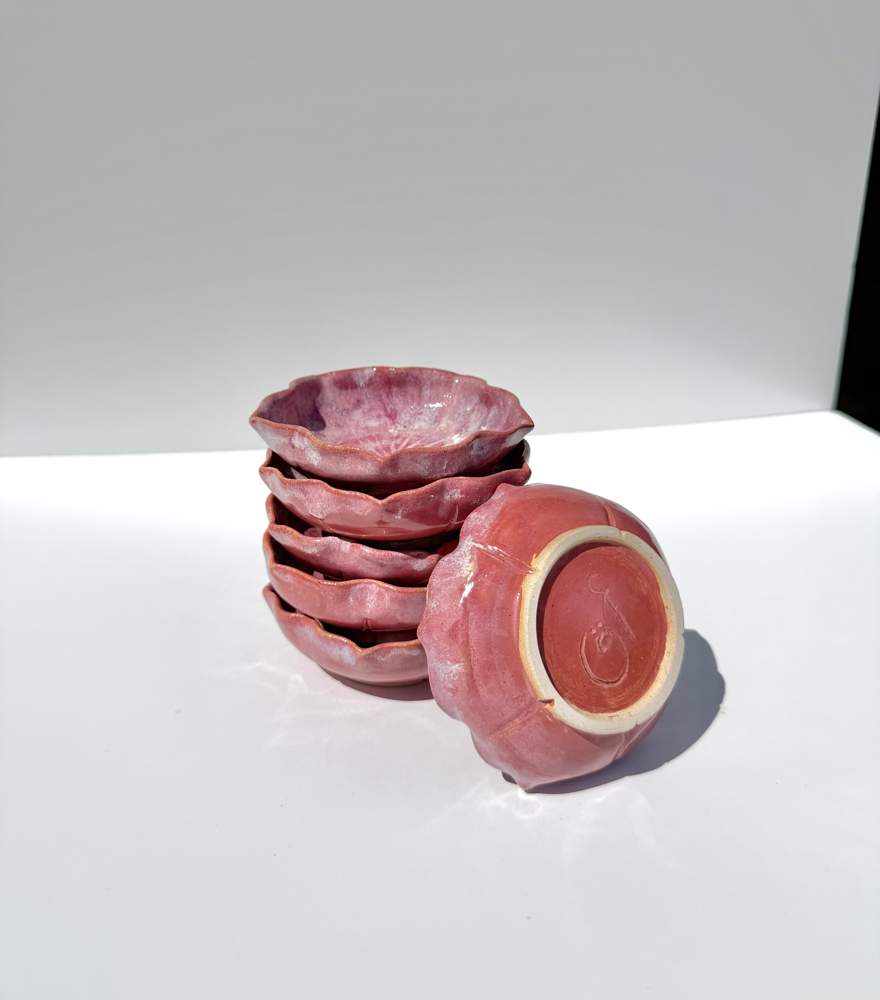
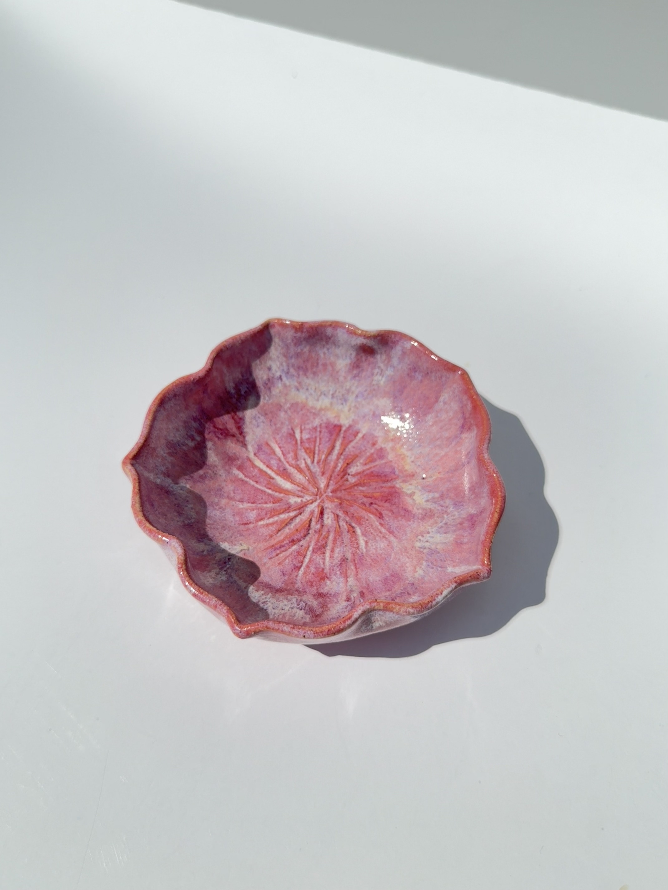
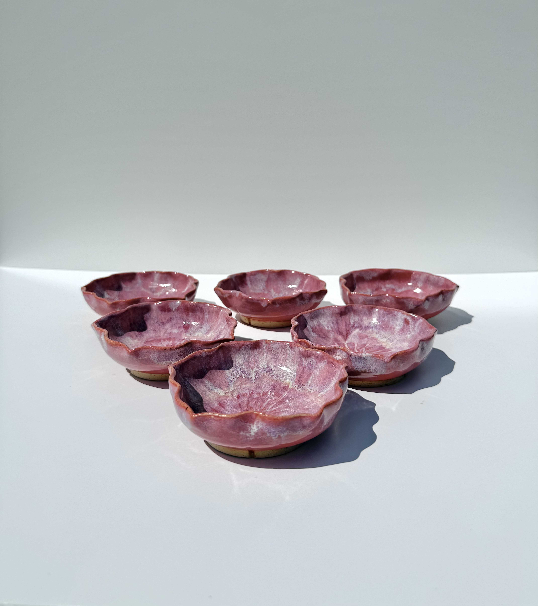
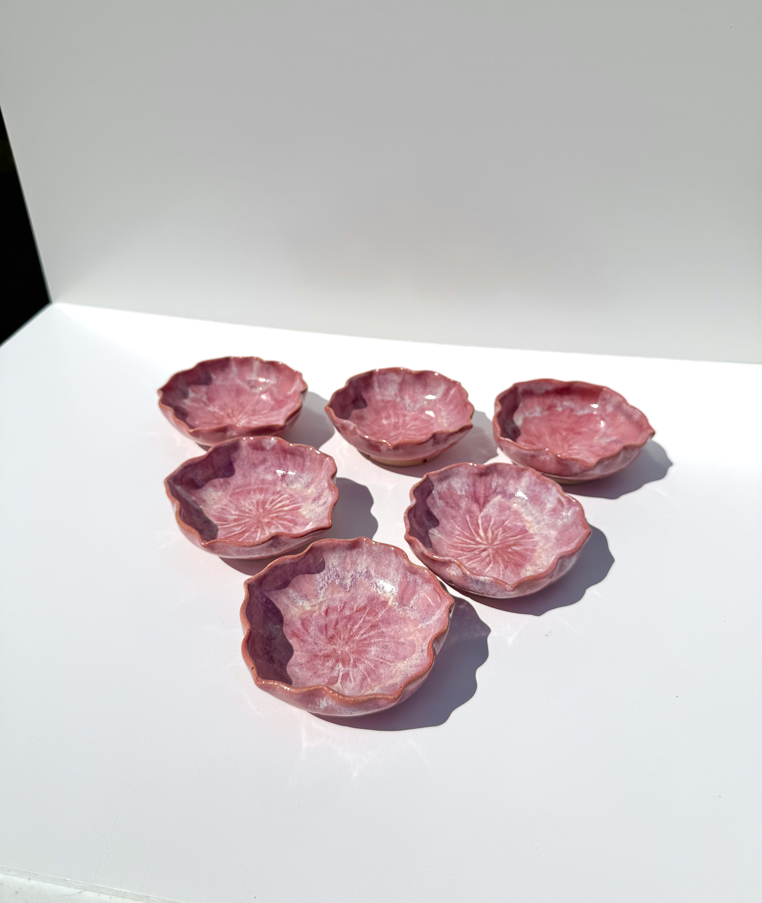
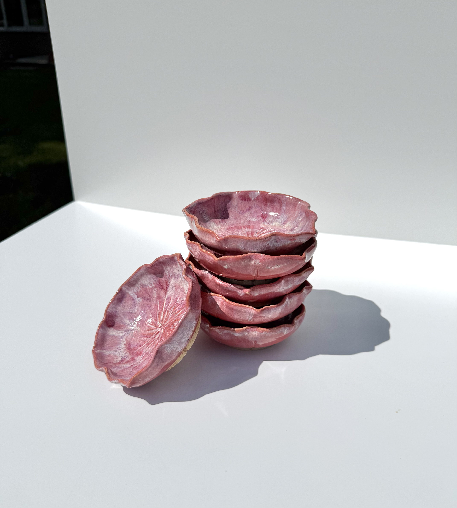
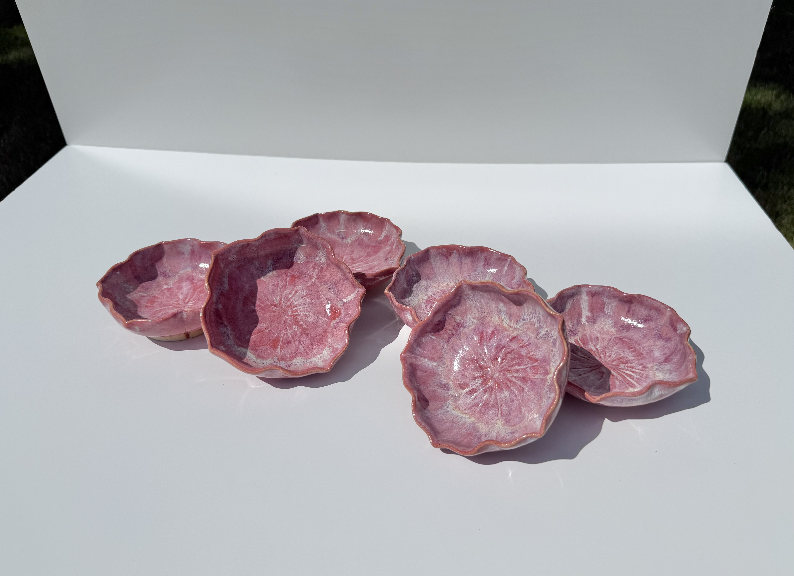

Flower Banchan Bowls
Not For Sale
Medium: Stoneware with Glaze
Dimensions: 7"H x 5.25"W x 6.75"D
Description: Six small bowls inspired by Korean Banchan bowls. Set features a dusty pink glaze and light carving to emphasize the flower shape of the rims.
Further Information: These small bowls are modeled off banchan bowls, which are an essential part of Korean tableware. I love having small amounts of pickeled vegetables, sauces, or other sides with my meals, so I made these to accompany the dishes in my kitchen. My favorite part about them is that when they are sitting on one of the many lily pad plates I've made they look like water lilies or lotus flowers hovering on a pond.